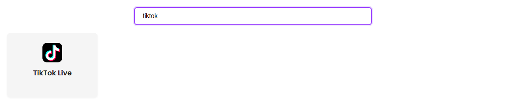
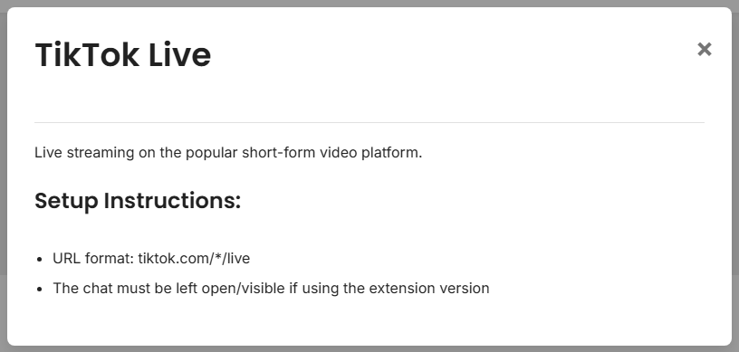

TikTok Live 채팅을 바로 사용하려면 이 가이드부터 시작하세요.
다음을 여세요: 지원 사이트 페이지에서 TikTok을 검색하세요. OBS 설정을 변경하기 전에 기본 설정 조건을 확인할 수 있습니다.

브라우저 확장 프로그램을 사용할 때는 크리에이터의 라이브 페이지를 열고 채팅이 보이도록 유지하세요.
https://www.tiktok.com/@CHANNEL/live

브라우저 탭이 계속 멈추거나 채팅을 숨긴다면 데스크톱 앱을 사용해 보세요.
SSN already made a session ID for you and puts it in every link it shows, along with your password and connection settings if you use them. Copy those links instead of typing your own; that ID is how the TikTok source, the dock, and OBS find each other.
You will use two of them: 기본 채팅 오버레이 및 제어 도크 그리고 선택한 채팅 오버레이. Each has a 링크 복사 (Copy link) 버튼.
SSN에서 다음을 클릭하세요: 링크 복사 (Copy link) 옆에 기본 채팅 오버레이 및 제어 도크 and open it in a browser tab. Send or wait for one TikTok chat message.
Your link will look something like https://socialstream.ninja/dock.html?session=..., with your own ID and settings after it.

Add a Browser Source in OBS and paste one of your copied links as its URL. Pick the one that matches what you want on stream:

템플릿 설정: 오버레이 템플릿 빠른 시작.
자세한 내용: 전체 TikTok 가이드.